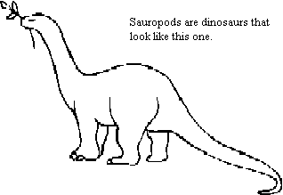

| Feature Article - April 1997 |
| by Do-While Jones |
The basic question we want to answer is, "Can lower species evolve into higher species?" You can't answer that question until you know what is meant by the word, "species" and how species relate to each other. It is harder than you might imagine to classify living things.
Classification by physical appearance doesn't work. There are many varieties of dogs that look very different from each other. These different varieties of dogs are all the same species. There are many birds that look so much alike that even members of the Audubon society have trouble telling them apart, but they are different species. You can't tell if two critters are the same species just by looking at them.
Appearance is too subjective. Reasonable people might disagree as to whether or not two critters look enough alike to be the same species. Scientists need an objective (testable) definition of species. The common definition of "species" is "related organisms or populations potentially capable of interbreeding." 1
Biologists classify individual organisms at the basic level of the species, which is the only category that can be regarded as occurring in nature. The higher categories are abstract groupings of species. A species is composed of organisms that resemble one another in many important characteristics. Moreover, in organisms that have sexual reproduction, a species is made up of interbreeding populations that, ideally, cannot produce fertile offspring with members of any other species.
Species that do not interbreed with each other but are clearly related by important shared traits are grouped into a genus (plural, genera) ... To construct the hierarchy of classification, one or more genera are grouped into a family, families are grouped into orders, orders into classes, classes into phyla, and phyla into kingdoms. 2
The weasel-word "ideally" is used because one would like a definition of "species" that is transitive (in the mathematical sense of the word). That is, a mathematician would like to be able to reason, "if Critter A is the same species as Critter B, and Critter B is the same species as Critter C, then Critter A is the same species as Critter C." In almost every instance, the interbreeding test satisfies this condition, but there are a few "circular overlaps. This is where there is a chain of intergrading subspecies forming a looping or overlapping circle whose terminal links, although inhabiting the same geographical region, do not interbreed even though they are connected by a complete chain of interbreeding populations. The classic case of this is the two species of European gull." 3 The interbreeding test isn't perfect.
The interbreeding test fails completely for asexual creatures. That is, if a creature reproduces without breeding with any other creature, how can we use its breeding characteristics to determine its species? The real problem, however, is that it absolutely, thoroughly, and completely fails to work for fossils. You can't leave a couple of bones in a dark place and wait to see if they produce baby bones to determine if they are the same species or not.
So, in the case of asexual creatures and fossils, a different method must be used to determine if the critters are the same species. Two critters are declared to be the same species if they look a lot alike, or have some common characteristics that seem important. We know this method fails miserably on living creatures (such as dogs and birds), so why should we expect it to work on dead critters?
Richard Leakey, a famous anthropologist who specializes in early humanoid fossils, makes this observation about the danger of inferring a relationship between fossils from their appearance:
The original Ramapithecus fossils are indeed human-like in some ways, but the species was not human. The task of inferring an evolutionary link based on extremely fragmentary evidence is more difficult than most people realize, and there are many traps for the unwary. Simeons and Pilbeam had been ensnared in one of those traps: anatomical similarity does not unequivocally imply evolutionary relatedness. 4
Let us not forget that Leakey's theory of human development is based on anatomical similarity and extremely fragmentary evidence, too. (But Leaky also used the presumed posture, diet, intelligence, and social customs of the bones he found, to determine what species they were and where they fit in the evolutionary chain. :-) )
Even with modern techniques, it is difficult to correctly identify a creature from its bones. This is evident from the embarrassing experience of "Clyde Snow, a forensic anthropologist with a long history of identifying victims of war crimes." 5 A left leg was found in the debris of the Oklahoma City bombing two years ago. "By measuring the lower leg and plugging the numbers into computer programs that categorize bones by race and sex, Snow confirmed the hunch: the leg probably came from a white male." 6 Eventually it was discovered that the leg belonged to Lakesha R. Levy who "was five feet, five inches tall, twenty-one years old and female. She was also, in the words of one forensics expert, 'obviously black.'" 7
The article quoted above had nothing to do with identification of fossil remains. It was trying to make the point that race is a myth, and that race doesn't work as a shorthand for biological variation. That author suggests that errors in identification are common "because their conclusions are based on a deeply flawed premise. As long as race is used as a shorthand to describe human biological variations-variations that blur from one race into the next, and are greatest within so-called races, rather than among them-misidentifications are inevitable." 8 [emphasis is in the original]
The point that we wish to make is that there are tremendous differences between individuals of the species Homo sapiens today. It is reasonable to assume that the same variation existed in humans (and apes) in the past. Just as "anatomical similarity does not unequivocally imply evolutionary relatedness," it is also true that anatomical differences do not unequivocally imply evolutionary development.
Imagine that all life on Earth is wiped out through nuclear war, famine, global warming, cosmic collision, or some other disaster of your choice. Imagine that paleontologists from another planet come to earth and find complete fossil skeletons of a Pit Bull, a Dalmatian, a Great Dane, and a Boxer. Would they conclude that the four fossils are one species or four species? It is quite likely that the bones would be incorrectly classified as four different species. If you throw in a Poodle skeleton, a few Irish Setter bones, and part of a Chihuahua skull, they certainly wouldn't be considered the same species. Would an extraterrestrial paleontologist be able to tell the skeleton of a crow from the skeleton of a raven?
The chances that a paleontologist can correctly identify species that he has never seen are slim, no matter what planet he came from. Actually, a human paleontologist might have less chance than an extra-terrestrial scientist because the human scientist is handicapped by his ego.
Suppose you find a bone or piece of a skull. You have two choices. You can decide that it looks enough like a known species to have come from an individual of that species. Or, you can decide that it looks different enough that it is an entirely new species. If it is a new species, you get the privilege of naming it, and your name will be in all the scientific journals as its discoverer. What choice would you make? Is it any wonder there are so many different fossil species?
Most people don't realize how "extremely fragmentary" the fossil evidence is. Brontosaurus, one of the best-known dinosaurs, never existed. It was an incorrect reconstruction. It never lived.
The first brontosaur skeleton was discovered (1879) in Colorado by the U.S. paleontologist Othniel Charles Marsh. It lacked a skull, so Marsh gave it a blunt, small skull found a few kilometers distant. This pairing remained in effect until 1979, when scientists confirmed that the skull was that of another sauropod, Camarasaurus. The brontosaur's true skull was found to have a longer snout and longer, finer teeth. 9

Based on vertebral characters, approximately 90 different genera and 150 species of sauropods have been identified. Of these sauropods, most have been identified on fragmentary material which makes comparisons between different sauropods difficult, if not impossible, because the animals have been defined on different skeletal elements.
In fact, complete or nearly complete skeletal material is known from only five genera of sauropods. Additionally, only about a dozen sauropods are known from good skeletal materials, while another dozen are known from reasonably complete skeletons. 10
So, 150 different species of Brontosaurus-like dinosaurs are known from fewer than 30 skeletons and who-knows-how-many scattered bones. Do you really believe anyone can tell if these 150 species could interbreed based on a few "reasonably complete" skeletons and a pile of individual bones? How do they know that there wasn't just one species of sauropod, with as much variation as there is today in dogs and humans?
"Among Triassic reptiles, by contrast, a whole genus may be known only from a single bone." 11 Think about that. On the basis of one bone, paleontologists have not only reconstructed a reptile that lived 225 million years ago, they have also reconstructed similar species from which no bones have been found.
Our point is that in museums and popular literature you will often read "facts" about the number of species and their relationship to each other. But when you investigate the evidence, you find that these "facts" are highly controversial speculations based on subjective opinions of rival experts. Furthermore, as the Encarta quote said, the classification of these species is a purely human invention based on a presumed model of evolution.
Anyone who has ever dealt with the U.S. Government supply system, or been part of a U.S. Government management structure, knows that everything can be put into a hierarchical classification system, whether these things are related or not! Furthermore, an organization that seems logical to one person may not make any sense to another person. Ultimately, the way things are organized influences the way we think about them.
Let's consider the critters in this table.
| Hawk | Bat | Bee | Pterodactyl | |
|---|---|---|---|---|
| Ostrich | Goat | Cockroach | Triceratops | Iguana |
| Penguin | Whale | Plesiosaur | Alligator |
Suppose Linnaeus had decided to classify them by rows. He could have logically thought that all the critters in the top row evolved from an unknown common flying ancestor. All the critters in the second row evolved from an unknown land-dwelling ancestor. All the critters in the bottom row evolved from an unknown swimming ancestor. This is no less logical than organizing them based upon how they bear and care for young, and what kind of body covering they have.
If Linnaeus had classified creatures using the common characteristics in each row rather than the common characteristics of each column, flight only would have evolved once, reducing the evolutionists' dilemma by 75%. But this classification scheme would have created other equally difficult problems. One would have to explain how feathers and mammary glands evolved independently three different times.
No serious scientist believes that a whale evolved from a fish that learned how to give milk; but some do still believe that a whale evolved from a land mammal that learned to swim. But the fossil evidence doesn't support the swimming-cow origin of whales any more than it supports the milk-giving fish origin. Both are silly ideas, but one is accepted because it fits with the modern prejudice that it is easier to evolve the ability to fly than it is to evolve the ability to give milk.
How we classify creatures depends upon how we view their origins. Once we have done this, our view of their origins is influenced by how we have classified them. There is a circular reinforcement of thought that has its basis in prejudice rather than fact.
We have seen that the differences between the corresponding bones of different individuals of one species can be as large, or larger, than the differences between corresponding bones of different (but similar) species. Physical appearance is not a reliable method for determining the species of a creature.
The reconstruction of extinct species is based on extremely fragmentary evidence. It is influenced by the shape of the bones, imagined social habits, probable diet, presumed intelligence of the creature, and (perhaps most importantly) the prejudices and ego of the person doing the reconstruction.
Finally, these species are organized in a hierarchy of human invention. Species are classified according to their assumed evolutionary relationship, so the classification itself cannot be used as logical proof of relationship.
The modern taxonomy of living creatures is highly speculative, and is not evidence that life has evolved. It is merely a reflection of the belief that life did evolve.
| Quick links to | |||
|---|---|---|---|
| Science Against Evolution Home page |
Back issues of Disclosure (our newsletter) |
Web Site of the Month |
Topical Index |
Footnotes:
1
Webster's Ninth New Collegiate Dictionary
2 Encarta 95,
"Classification,"
(Ev)
3 Michael Denton,
Evolution: A Theory in Crisis, page 81
(Cr-)
4 Leaky, R.
The Origin of Humankind 1994, page 8
(Ev)
5 Goodman, A.,
"Bred in the Bone", The Sciences
March/April 1997 page 20
(Ev)
6 Ibid. page 21
7 Ibid. page 21
8 Ibid. page 21
9 "Brontosaur," Encarta 95
(Ev)
10 Preiss and Silverberg,
The Ultimate Dinosaur, 1993, page 106
(Ev)
11 Carey,
Theories of the Earth and Universe (A History of Dogma
in the Earth Sciences) 1989, page 102
(Ev)